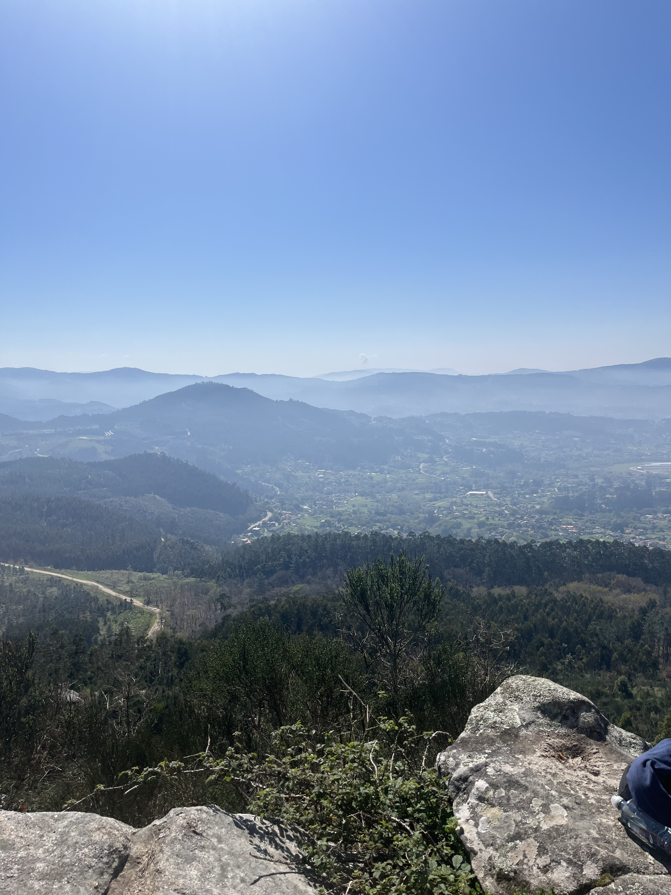
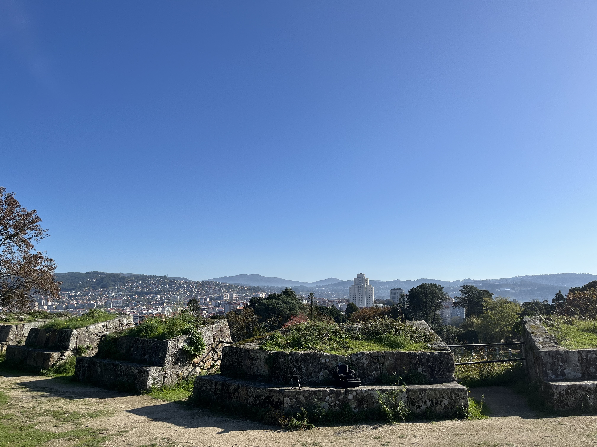

ARCHIVO PERSONAL · VIGO
Música, sociedad
y prácticas de escucha.
Silvino Díaz Carreras. Investigación, código creativo y grabaciones de campo.

01 / TERRITORIOS DE ESCUCHAEN FOCO · GUÍA INTERACTIVA
El mundo suena.
Aprende a escucharlo.
Paisaje sonoro y ecología acústica: descubre las capas del entorno, experimenta con el ruido y prepara tu propio paseo de escucha.
Explorar la guía02 / ESCRITURA
Últimas publicaciones
03 / LABORATORIO · SUPERCOLLIDER
El código también
se escucha.
Sesión 07. Del banco de parciales a una textura en movimiento: síntesis aditiva, eventos agudos y memoria espacial.
Abrir sesión 07Todas las sesiones y recursos →// Sine partials, shared space
(
~partials = {
var f = 110;
Splay.ar(
SinOsc.ar(f * [1, 2, 3, 5])
* [0.1, 0.05, 0.03, 0.02]
);
}.play;
)IMAGEN EN MOVIMIENTOExplorations in Paradise · Ver el archivo audiovisual ↗
04 / ESCUCHA DE CAMPO
Una pausa en O Castro.

Una sirena, pájaros, pasos. La ciudad se escucha desde la fortaleza.